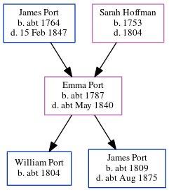

Randal Port c1791 - c1865
[ Home ] | [ Calendar ] | [ Surnames Index ] | [ Errors ] | [ Family History ]A labourer and the child of James Port and Sarah Hoffman, Randal Port, the four times great-uncle of Nigel Horne, was born in Herne, Kent, England c. 17911, was baptised there at St Martin on 27 Mar 1791 and had 2 children with Sophia: Fanny and William. On 30 Mar 1851, he was living in Reculver, Kent, England1.
He died c. Aug 1865 in Blean, Kent, England2.
Parents
- James was born c. 1764
- Sarah was born in 1753
Children
- Fanny was born in 1828
- William was born c. 1838
Citations
- 1851 England, Wales & Scotland Census - Findmypast (was age 60 and the head of the household)
- England & Wales deaths 1837-2007 - Findmypast
Media
Kent Baptisms - GBPRS-CANT-B-96123396
1851 England, Wales & Scotland Census - GBC-1851-0005820143
England Births & Baptisms 1538-1975 - R_884937904
England & Wales deaths 1837-2007 - BMD/D/1865/3/MZ/000385/030
Family Tree
Map
Generated by ged2site. Last updated on Jul 3, 2024